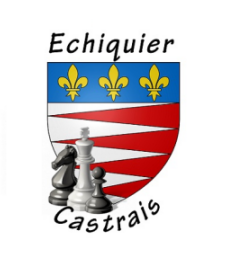

Echiquier Castrais

Fondé en 1931, ce club fête cette année ses 90 ans ! Un nonagénaire en pleine forme...
Infos du club
Page Facebook du club
Et sur le site FFE
Actualité de CASTRES
18/01/2021
Un article de presse sur le club et la pratique des échecs en ligne a été diffusé samedi dernier dans le journal la dépêche.
Pour télécharger l'article, c'est ICI
12/01/2021
A compter du mercredi 20 janvier les cours d'échecs jeunes de l'échiquier castrais seront accessibles pour les jeunes des autres clubs du département qui le souhaitent.